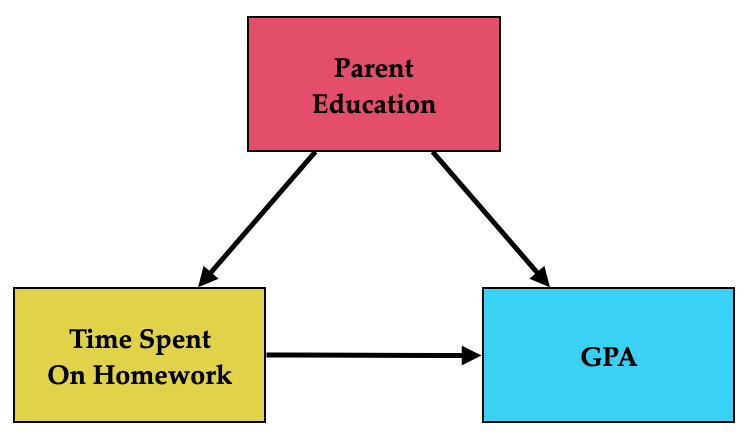
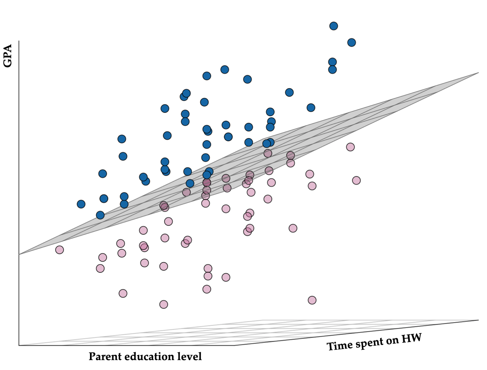

In this chapter, you will learn about including multiple predictors into the regression model. To do so, we will use the keith-gpa.csv data to examine whether time spent on homework is related to GPA. The data contain three attributes collected from a random sample of \(n=100\) 8th-grade students (see the data codebook). To begin, we will load several libraries and import the data into an object called keith.
# Fit regression modellm.a =lm(gpa ~1+ homework, data = keith)
14.1 Observational Data and Alternative Explanations
In the previous chapters, we fitted a model regressing students’ GPA on time spent on homework. Recall that the goal of the analysis was to understand the relationship between time spent on homework and GPA and, in particular, to estimate the effect of time spent on homework on students’ GPA. The results from the analyses we undertook are presented here:
The \(R^2\) value of 0.107 suggests that 10.7% of the variation in students’ GPAs is explainrd by differences in time spent on homework. Although small, this amount of explained variation is statistically discernible from 0; \(F(1,98)=11.8\), \(p<0.001\). The effect of time spent on homework (\(B=1.21\), \(p<.001\)) suggests that each additional hour spent on homework is associated with a 1.21-grade point difference in GPA, on average. These analyses suggest that time spent on homework seems to have a small, positive effect on GPA.
While it seems we have an answer to our research question, unfortunately because of the nature of the data our answer might be quite wrong. To understand this, we need to dive into the differences between observational and experimental data and why experimental data is the key to obtaining “true” estimates of effects.
14.1.1 Experimental or Observational Data
Experimental data are data that have been collected from a study in which the researcher randomly assigned cases/participants in their sample to different levels of the predictor. In an introductory statistics class you probably encountered this in the context of a predictor with only two levels (e.g., treatment and control). In those situations the goal was to determine the effect of the treatment on some outcome.
We can also think about random assignment with predictors that have more than two levels. For example, if you were studying the effect of the amount of tutoring on some educational outcome you might have several levels of the predictor: 30 min of tutoring, 45 min of tutoring, 60 min of tutoring, 75 min of tutoring, 90 min of tutoring, etc. The data here can also be experimental so long as the participants in the study were randomly assigned to the different levels of tutoring.
The key question to determine whether the data are experimental is: were cases/participants randomly assigned to different levels of the predictor?
Let’s ask that question about our homework/GPA data…were students randomly assigned to spend different amount of time on homework? The answer is no. Students were not randomly assigned to different levels of the predictor. They self select how much time they spend on homework. Because of this, these data are not experimental in nature. We instead refer to these data as observational in nature. Observational data are any data in which cases/participants were not randomly assigned to levels of the predictor. Most data collected or used in the social and educational sciences are observational in nature!
14.1.2 Confounding and Observational Data
The nature of the data has a direct impact on our conclusions about the effect of the predictor. When the data are observational, any conclusions about effects are not as strong as those conclusions we could draw if the data were experimental. This is because the conclusions we draw about effects from observational data may be impacted/biased by confounding. Confounding occurs when some variable influences both the assignment of cases/participants to the predictor levels and also influences the outcome. For example, we know that in education, student outcomes are typically influenced by parent education level—that is it influences the outcome. Parent education level might also impact how much time a student spends on homework. Students whose parents have a higher education level might spend more time on homework than students whose parents have a lower education level. (Again, this is “on average”. There may be individual students whose parents have a lower education level that spend a lo of time on homework.) In this scenario, parent education level is a confounder; it influences both the predictor (amount of time spent on homework) and the outcome (GPA).
We can depict some of these ideas in a path diagram. A path diagram visualizes the different variables under study and the effects of those variables. Variables are depicted as rectangles1 and effects are depicted as single-headed arrows. For example, the following path diagram shows the two variables time spent on homework and GPA. Note that the arrow representing the effect of time spent on homework on GPA originates from the predictor rectangle and points toward the outcome. This shows that the effect is on the outcome.
Recall that our potential confounder (parent education) has an effect on both the predictor and the outcome. The path diagram showing this is depicted as:

The big issue with confounders is that they can impact the effect of your focal predictor on the outcome. In our case, the true effect of time spent on homework on GPA may not really be small and positive. Maybe it is actually large and positive. Or maybe time spent on homework actually has no effect on GPA. Or worse, maybe it actually has a negative effect on GPA! We just don’t know. To make matters worse, there may be other confounders that we haven’t even thought about. These will also have a potential impact on the effect of our focal variable on the outcome.
With experimental studies, since participants are assigned randomly by the researcher, there is theoretically no such thing as a confounder. This is because other predictors (e.g., parent education) cannot influence the level of predictor sicne it is a random mechanism that is determining the level of the predictor. The path diagram if this were experimental data would look like this:
Note that there is no longer an arrow going from parent education to time spent on homework since parent education cannot influence time spent on homework if students were being randomly assigned to levels of homework. That is, students whose parents have a higher education level are just as likely to be assigned to low levels of time on homework as high levels of time on homework. Because parent education is no longer influencing the level on the time spent on homework predictor it is not a confounder.
More importantly, with experimental data whatever the effect of time spent on homework was on GPA in the simple two rectangle model, it is theoretically the same, regardless of any other predictor that might be influencing the outcome. That is, even if parent education influences students’ GPA, the effect of time spent on homework would not change the original effect, it would remain a small, positive effect. Whereas, with observational data, we just don’t know whether nor how the effect will change.2
Drawing out a path diagram helps you document the effects you are evaluating. It can also help you identify confounders when you have observational data.
14.2 Multiple Regression: The Key to Evaluating Observational Data
To understand whether or how the effect of time spent on homework on GPA is impacted by the confounder of parent education, we can include parent education level as an additional predictor in the model (along with time spent on homework). By looking at the resulting effect of time spent on homework on GPA we get a better understanding of what the true effect is.
While multiple regression is helpful for dealing with confounders in observational data, we can use multiple regression to quantify effects for any type of data, including experimental data.
14.2.1 Examining the Parent Education Level Predictor
Before we begin modeling, it behooves us to explore the parent education level predictor. Below we examine the marginal distribution of parent education for the 100 students in the sample.
Figure 14.1: Density plot of the marginal distribution of parent education level.
We also compute numerical summaries of the distribution.
# Compute mean and standard deviationkeith |>summarize(M =mean(parent_ed),SD =sd(parent_ed) )
Parent education level is somewhat right skewed with a typical education level of roughly 14 years (some college). There is quite a lot of variation in parent education level (SD=1.93), with most employees having between 12 and 16 years of formal education.
After we examine the marginal distribution, we should examine the relationships among all of the three variables we are considering in the analysis. Typically researchers will examine the scatterplot between each predictor and the outcome (to evaluate the functional forms of the relationships with the outcome) and also examine the correlation matrix. Since we have already looked at the scatterplot between time spent on homework and GPA, we focus here on the relationship between parent education level and GPA.
# Relationship between parent education level and GPAggplot(data = keith, aes(x = parent_ed, y = gpa)) +geom_point() +theme_bw() +xlab("Parent education level") +ylab("GPA")
Figure 14.2: Scatterplot showing the relationship between parent education level and GPA.
The correlation matrix between all three variables is also examined. When we select the variables to use, again we start with the outcome followed by our focal predictor. Then any other predictors are included.
The relationship between parent education level and GPA seems linear and positive (\(r=0.29\)). This suggests that students whose parents have higher education levels also tend to have higher GPAs. Time spent on homework and parent education level are also modestly correlated (\(r=0.28\)), indicating that students whose parents have higher education levels also tend to spend more time on homework.
Note here that parent education level seems to be related to the predictor and the outcome. This suggests that it may be a confounder. (In an experimental study, the correlation between parent education level and time spent on homework would be close to 0.) Sometimes people show the correlations on a path diagram. Correlations are shown as double-headed arrows rather than single-headed arrows.
The relationships observed in this correlation matrix are consistent with the issues we were concerned about earlier, namely that the positive effect of time spent on homework on GPA may be due to the fact that students who spend more time on homework are the students whose parents have higher education levels. And, the positive relationship between parent education level and GPA is clouding the “real” underlying relationship between time spent on homework and GPA.
14.2.2 Simple Regression Model: Parent Education Level as a Predictor of GPA
It is also instructive to fit and examine the results from the simple regression model using parent education level as a predictor of variation in GPA.
lm.b =lm(gpa ~1+ parent_ed, data = keith)# Model-level resultsglance(lm.b)
These analyses suggest that differences in parent education level explain 8.7% of the variation in GPA. The effect of parent education level on GPA is \(B=1.16\) indicating that the estimated mean GPA for students whose parent education level differs by one year varies by 1.16 grade points. We also find that this effect is statistically discernible from 0 (\(p=.003\)).
14.2.3 Multiple Regression Model: Parent Education Level and Time Spent on Homework as a Predictors of GPA
Our research question is focused on examining the relationship between time spent on homework and GPA, which as we learned, may be confounded by parent education level.
What we need to know in order to determine the effect of time spent on homework on GPA is: After we account for any distributional differences in parent eduation level across levels of time spent on homework is there is still a relationship between time spent on homework and GPA. To answer this question, we will fit a model that includes both predictors. To fit the multiple regression model, we will just add (literally) additional predictors to the right-hand side of the lm() formula.
# Fit multiple regression modellm.c =lm(gpa ~1+ parent_ed + homework, data = keith)
14.2.3.1 Model-Level Results
To interpret multiple regression results, begin with the model-level information.
In a multiple regression model there are multiple predictors that are being used to explain variation in the outcome variable. We can begin by examining the \(R^2\) value from the output. Interpreting this value, we say:
Differences in time spent on homework AND parent education level explain 15.2% of the variation in GPA, in the sample.
The model-level test allows us to evaluate whether, together, these predictors explain variation in the outcome or whether any explained variation in the sample is attributable to sampling error. The formal model-level null hypothesis that tests this can be written mathematically as,
\[
H_0:\rho^2 = 0.
\]
This is a test of whether all the predictors together explain variation in the outcome variable. The results of this test, \(F(2,97)=8.70\), \(p=.003\), suggest that the empirical evidence is inconsistent with the null hypothesis; it is likely that together time spent on homework AND parent education level do explain variation in the population.
Equivalently, we can also write the model null hypothesis as a function of the predictor effects, namely,
In plain English, this is akin to stating that there is NO EFFECT for every predictor included in the model. If the empirical data are inconsistent with this null hypothesis, it suggests that AT LEAST ONE of the predictor effects is likely not zero.
Although the two expressions of the model-level null hypothesis look quite different, they are answering the same question, namely whether the model predicts more variation in GPA than is attributable to sampling variation. Based on the results of the model-level hypothesis test we believe there is: (1) an effect of time spent on homework on GPA, (2) an effect of parent education level on GPA, OR (3) there is an effect of both predictors on GPA. The model-level results, however, do not allow us to determine which of the predictors has an effect on the outcome variable. For that we need to evaluate the coefficient-level results.
14.2.3.2 Coefficient-Level Results
Now we turn to the coefficient-level results produced in the tidy() output.
# Coefficient-level resultstidy(lm.c)
First we will write the fitted multiple regression equation,
The slopes (of which there are now more than one) are referred to as partial regression slopes or partial effects. They represent the effect of the predictor AFTER accounting for the effects of the other predictors included in the model. For example,
The partial effect of parent education level is 0.87. This indicates that a one year difference in parent education level is associated with a 0.87 grade-point difference in GPA (on average), after accounting for differences in time spent on homework.
The partial effect of time spent on homework is 0.99. This indicates that a one hour difference in time spent on homework is associated with a 0.99 grade-point difference in GPA (on average), after accounting for differences in parent education level.
The language “after accounting for” is not ubiquitous in interpreting partial regression coefficients. Some researchers instead use “controlling for”, “holding constant”, or “partialling out the effects of”. For example, the time spent on homework effect could also be interpreted these ways:
A one hour difference in time spent on homework is associated with a 0.99 grade-point difference in GPA (on average), after controlling for differences in parent education level.
A one hour difference in time spent on homework is associated with a 0.99 grade-point difference in GPA (on average), after holding the effect of parent education level constant.
A one hour difference in time spent on homework is associated with a 0.99 grade-point difference in GPA (on average), after partialling out the effect of parent education level.
Lastly, we can also interpret the intercept:
The average GPA for all students whose parent education level is 0 years AND who spend 0 hours on homework a week is estimated to be 63.2.
This is the predicted average Y value when ALL the predictors have a value of 0. As such, it is often an extrapolated prediction and is not of interest to most applied researchers. For example, in our data, parent education level ranges from 10 to 20 years and time spent on homework ranges from 1 to 11 years. We have no data that has a zero value for either predictor, let alone for both. This makes prediction of the average Y value tenuous at these X values.
14.2.3.3 Coefficient-Level Inference
At the coefficient-level, the hypotheses being tested are about each individual predictor. The mathematical expression of the hypothesis is
\[
H_0: \beta_k = 0.
\]
In plain English, the statistical null hypothesis states: After accounting for ALL the other predictors included in the model, there is NO EFFECT of X on Y. These hypotheses are evaluated using a t-test. For example, consider the test associated with the parent education level coefficient.
This is akin to stating there is NO EFFECT of parent education level on GPA after accounting for differences in the amount of time spent on homework. The empirical evidence is inconsistent with this hypothesis, \(t(97)=2.27\), \(p=.026\), suggesting that there is likely an effect of parent education level on GPA after controlling for differences in the amount of time spent on homework. (Note that the df for the t-test for all of the coefficient tests is equivalent to the error, or denominator, df for the model-level F-test. This can be found in the glance() output.)
The test for the focal predictor, time spent on homework is evaluating the null hypothesis that there is NO EFFECT of the amount of time spent on homework on GPA after accounting for differences in parent education level: \(H_0: \beta_{\mathrm{Time~on~HW}} = 0\). The empirical evidence is also inconsistent with this hypothesis, \(t(97)=2.74\), \(p=.007\), suggesting that there is likely an effect of the amount of time spent on homework on GPA after controlling for differences in parent education level.
Based on these results, both predictors seem to have an effect on GPA.
It is important to note that unlike in simple regression models, the p-value at the model-level for multiple regression models is different from any of the coefficient-level p-values. In our example the p-value from the model-level F-test was 0.0003, while those for the coefficient-level t-tests were 0.026 and 0.007 respectively. This is because when we include more than one predictor in a model, the hypotheses being tested at the model- and coefficient-levels are different. The model-level test is a simultaneous test of all the predictor effects, while the coefficient-level tests are testing the added effect of a particular predictor after we control for all other predictors in the model.
14.2.3.4 Updating the Path Model
We can now include the coefficients from the fitted multiple regression model to update our path diagram.
Figure 14.3: Path diagram for the multiple regression model. Path values are unstandardized coefficients.
One thing you will note is that the updated path diagram no longer includes the arrow from parent education level to GPA. That is because it is no longer relevant to us. We were concerned about that path because it indicated that parent education level might be a confounding variable which would impact the effect we were interested in, namely that for the effect of time spent on homework. By including parent education level in the regression model along with time spent on homework, we obtain an estimate of the effect of time spent on homework that accounts for the confounding. Because of that, the path from parent education level to GPA can be omitted.3
By comparing the effect of time spent on homework on GPA from the simple and the multiple regression model, we have a more accurate understanding of the effect.
Figure 14.4: Path diagram for the simple and multiple regression model. Path values are unstandardized coefficients.
In the simple regression model the effect of time spent on homework on GPA was 1.21, indicating that each one hour difference in the amount of time spent on homework was associated with a 1.21 grade-point difference in GPA on average. After we account for parent education level, the effect of time spent on homework on GPA is 0.99. This implies that some of the inital effect is really attributable to parent level of education (it is a confounder). The diminished value better reflects the actual effect of time spent on homework on GPA.4
14.3 Multiple Regression: Statistical Model
The multiple regression model posits that each case’s outcome (Y) is a function of two or more predictors (\(X_1\), \(X_2\), , \(X_k\)) and some amount of error. Mathematically it can be written as
As with simple regression we are interested in estimating the values for each of the regression coefficients, namely, \(\beta_0\), \(\beta_1\), \(\beta_2\), …, \(\beta_k\). To do this, we again employ least squares estimation to minimize the sum of the squared error terms.
Since we have more than one X term in the fitted equation, the structural part of the model no longer mathematically defines a line. For example, the fitted equation from earlier,
mathematically defines a regression plane. (Note we have three dimensions: Y, \(X1\), and \(X2\). If we add predictors, we have four or more dimensions and the equation would describe a hyperplane.)
The data and regression plane defined by the parent education level, time spent on homework, and GPA for the keith data is shown below. The regression plane is tilted up in both the education level direction (corresponding to a positive partial slope of education) and in the seniority level direction (corresponding to a positive partial slope of seniority). The blue points are above the plane (employees with a positive residual) and the yellow points are below the plane (employees with a negative residual).

Figure 14.5: Three-dimensional scatterplot showing the relationship between parent education level, time spent on homework, and GPA. The fitted regression plane is also shown. Blue observations have a positive residual and pink observations have a negative residual.
14.3.1 Residuals
Graphically, the residuals from this model are the vertical distance between the observed points and the regression plane. Mathematically, they can be computed in the same manner as they were in the simple regression model, namely:
\[
\hat{\epsilon_i} = Y_i - \hat{Y_i}
\]
For example, consider the first observation in the keith data. This student has the following values:
Given this student’s parent education level and the amount of time they spend on homework, their GPA is above average by 1.51 grade-points. This is depicted in Figure 14.6.
Figure 14.6: Three-dimensional scatterplot showing the relationship between parent education level, time spent on homework, and GPA. The fitted regression plane is also shown. Blue observations have a positive residual and pink observations have a negative residual. Observation 1 is shown in orange and its residual depicted as a blue vertical line extending to the regression plane.
14.4 Order of Predictors in the lm() Function
In our lm(), we fitted the multiple regression model by first including parent education level, and then including time spent on homework.
# Fit multiple regression modellm.c =lm(gpa ~1+ parent_ed + homework, data = keith)
Let’s re-fit our multiple regression model, but this time we will include time spent on homework first and parent education level second.
# Fit multiple regression modellm.d =lm(gpa ~1+ homework + parent_ed, data = keith)
Does the order of the predictors change the estimates we get in the model- and coefficient-level output?
Both the model-level and coefficient-level output is identical regardless of the order that the predictors are entered into the lm() function.
While this means you don’t have to stress about the order you enter predictors in the model, conventionally if you have a focal predictor that is entered into the model last. That is why we included parent education level prior to time spent on homework in the lm() initially.
Sometimes variables are represented as circles in a path diagram. These typically represent latent variables.↩︎
When the effect of a predictor remains consistent regardless of other things that might influence the outcome, we call that predictor a “cause”. Because this is the case in experimental data, sometimes people will say that experimental data allows for cause-and-effect type inferences.↩︎
Depending on the analyses undertaken sometimes researchers keep the path and also include a path coefficient as well. This can help them compute indirect effects. This is beyond the scope of this class, but you can learn more in EPSY 8264.↩︎
While this is a more accurate representation of the effect, the reality is that both estimates are pretty close to 1. Moreover, on the 100-point scale which GPA is measured on, there is really no practical difference between an effect of 1.21 and 0.99. So, while parent education level is attributable for some of the initial effect, it isn’t a lot.↩︎